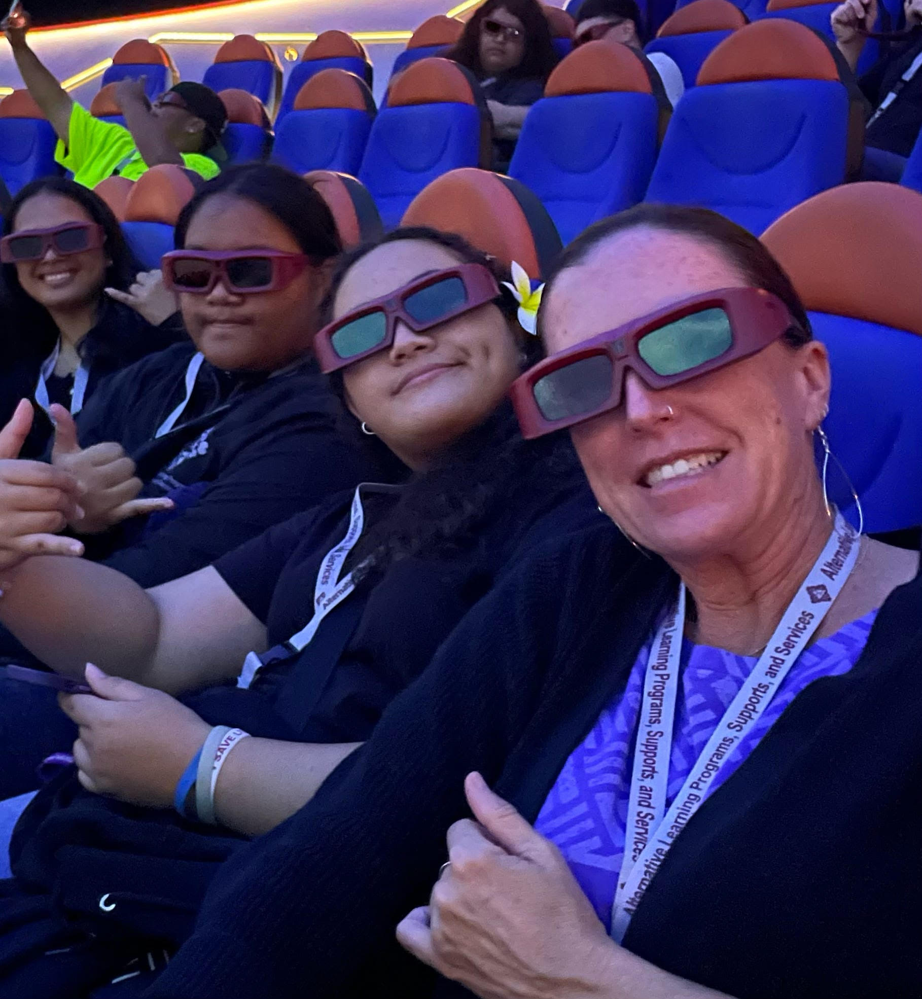

Winter Summit
A place where people can grow
It takes a lot to be someone that steps willingly to lend a helping hand to someone in need. Which is why the ALLPS summit program, that are hosted every winter and summer of the year, teaches you how to be someone to take action, and grow into something amazing!

A place where people can grow
The summit starts with:
Of course you will! From my personal expirence, I've gorwn a lot from the past summits I went to. It changes you, in a way that makes you feel better about yourself, and it gives you something to look forward to! It's garanteed that you'll make plenty of friends, or acquaintances during the summit, because it's where poeple find others that might be going through the same thing.